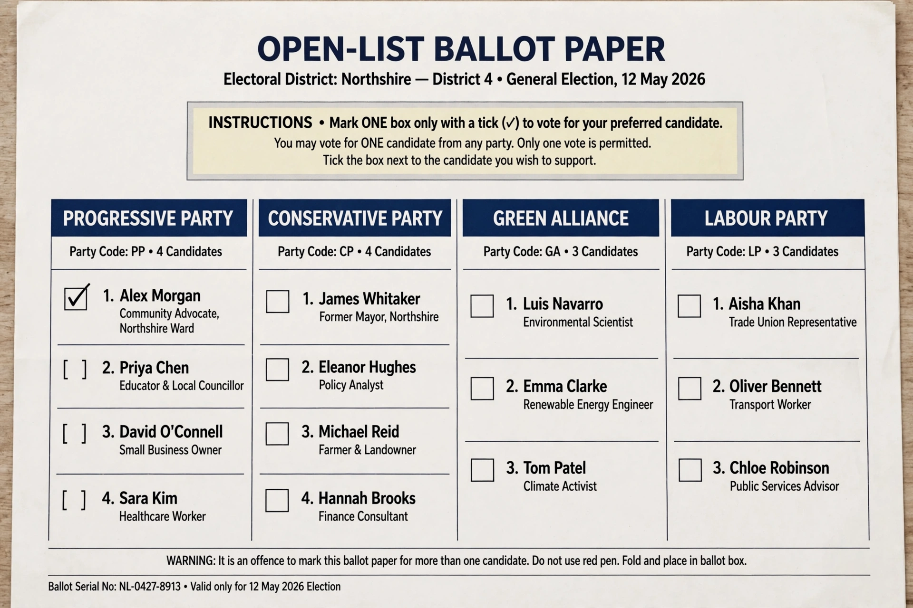

From Wikipedia, the free encyclopedia
Open list describes any party-list system of proportional representation in which voters can indicate not only their preferred party but also their favoured candidate within that party's list, with the candidates who receive the most personal (preference) votes taking the seats the party has won. It contrasts with the closed list, in which the order of candidates is fixed by the party and voters cannot alter it.
Seats are first allocated to parties in proportion to their total votes, using a divisor or quota method (such as D'Hondt, Sainte-Laguë, or a quota such as the Droop quota). Within each party, seats then go to the candidates with the highest individual vote totals, overriding the party's original ranking to a greater or lesser extent. Systems vary: in some (e.g. Finland, Brazil, Poland), personal votes entirely determine which candidates are elected; in others (e.g. Sweden, the Netherlands), a candidate must pass a preference threshold to move up the list, otherwise the party order stands — sometimes called a "flexible" or "semi-open" list.

Open lists are used in countries including Finland, Brazil, Poland, Indonesia, Latvia, Chile, Peru, and for European Parliament elections in several member states. Latvia's system even allows voters to strike out candidates they dislike. Open lists strengthen the personal mandate of representatives and voter choice, but critics note they can encourage intra-party competition, expensive personal campaigns, clientelism and localism, and may weaken party discipline.
Categories: Party-list proportional representation · Electoral systems